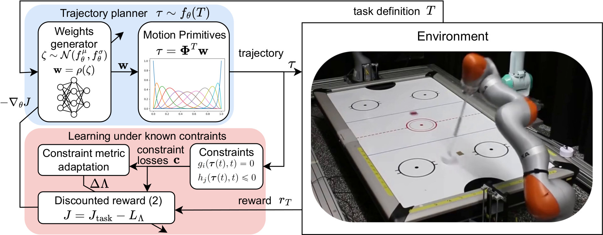

Overview of the proposed constrained trajectory generation method

Second image description.

Third image description.

Trajectory planning under kinodynamic constraints is fundamental for advanced robotics applications that require dexterous, reactive, and rapid skills in complex environments. These constraints, which may represent task, safety, or actuator limitations, are essential for ensuring the proper functioning of robotic platforms and preventing unexpected behaviors. Recent advances in kinodynamic planning demonstrate that learning-to-plan techniques can generate complex and reactive motions under intricate constraints. However, these techniques necessitate the analytical modeling of both the robot and the entire task, a limiting assumption when systems are extremely complex or when constructing accurate task models is prohibitive. This paper addresses this limitation by combining learning-to-plan methods with reinforcement learning, resulting in a novel integration of black-box learning of motion primitives and optimization. We evaluate our approach against state-of-the-art safe reinforcement learning methods, showing that our technique, particularly when exploiting task structure, outperforms baseline methods in challenging scenarios such as planning to hit in robot air hockey. This work demonstrates the potential of our integrated approach to enhance the performance and safety of robots operating under complex kinodynamic constraints.
@misc{kicki2024bridginggaplearningtoplanmotion,
title={Bridging the gap between Learning-to-plan, Motion Primitives and Safe Reinforcement Learning},
author={Piotr Kicki and Davide Tateo and Puze Liu and Jonas Guenster and Jan Peters and Krzysztof Walas},
year={2024},
eprint={2408.14063},
archivePrefix={arXiv},
primaryClass={cs.RO},
url={https://arxiv.org/abs/2408.14063},
}